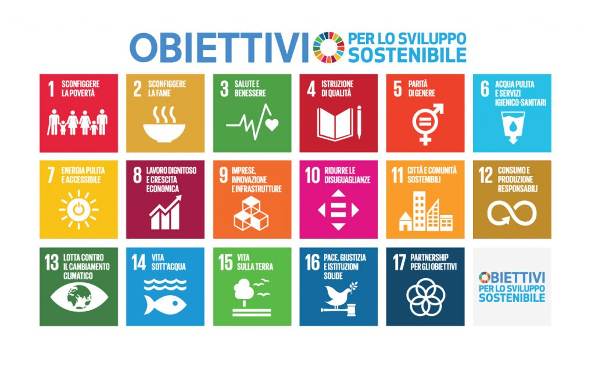

Agenda 2030
L’Agenda 2030 per lo Sviluppo Sostenibile è un programma d’azione per le persone, il pianeta e la prosperità.
Sottoscritta il 25 settembre 2015 dai governi dei 193 Paesi membri delle Nazioni Unite, e approvata dall’Assemblea Generale dell’ONU, l’Agenda è costituita da 17 Obiettivi per lo Sviluppo Sostenibile – Sustainable Development Goals, SDGs – inquadrati all’interno di un programma d’azione più vasto costituito da 169 target o traguardi, ad essi associati, da raggiungere in ambito ambientale, economico, sociale e istituzionale entro il 2030.
Questo programma non risolve tutti i problemi ma rappresenta una buona base comune da cui partire per costruire un mondo diverso e dare a tutti la possibilità di vivere in un mondo sostenibile dal punto di vista ambientale, sociale, economico.
I 17 Goals fanno riferimento ad un insieme di questioni importanti per lo sviluppo che prendono in considerazione in maniera equilibrata le tre dimensioni dello sviluppo sostenibile – economica, sociale ed ecologica – e mirano a porre fine alla povertà, a lottare contro l‘ineguaglianza, ad affrontare i cambiamenti climatici, a costruire società pacifiche che rispettino i diritti umani.
I 17 obiettivi sono i seguenti:
Sconfiggere la povertà
Sconfiggere la fame
Salute e benessere
Istruzione di qualità
Parità di genere
Acqua pulita e servizi igienico-sanitari
Energia pulita e accessibile
Lavoro dignitoso e crescita economica
Imprese, innovazione e infrastrutture
Ridurre le disuguaglianze
Città e comunità sostenibili
Consumo e produzione responsabili
Lotta contro il cambiamento climatico
Vita sott’acqua
Vita sulla Terra
Pace, giustizia e istituzioni solide
Partnership per gli obiettivi (1/2 - 2/2)
Ora vorrei soffermarmi su qualche punto in particolare
Il 4° punto di questa lista è Istruzione di qualità.
Vorrei soffermarmi su questo punto poiché reputo sia la chiave per raggiungere gli altri, penso infatti che se a tutti arrivasse la giusta istruzione e di consgueza cultura, molte buone abitudini che tenderebbero a migliorare la situazione mondiale sarebbero più semplici da accogliere nel comportameto di tutti.
Il 7° punto di questa lista è Energia pulita e accessibile.
Un altro punto che mi sta particolarmente a cuore è il settimo di questa lista, reputo molto importante l'innovazione in questo ambito poichè ridurrebbe di motlo l'inquinamento ambientale e fornirebbe a mio avviso nuovi sbocchi lavorativi, la ricerca in questo ambito è fondamentale per un futuro sostenibile.